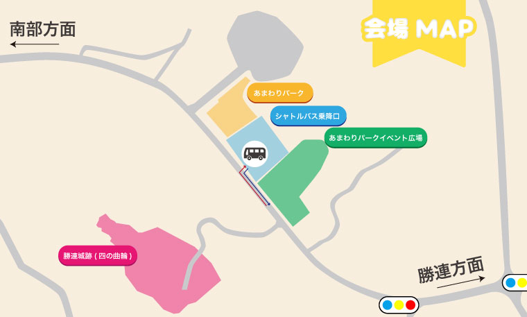
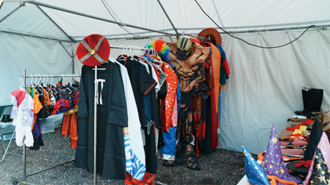
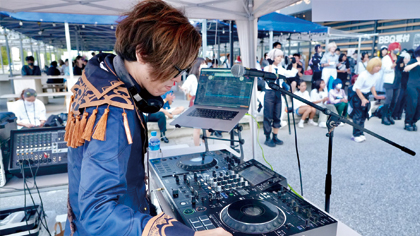
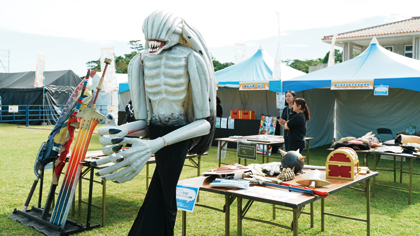
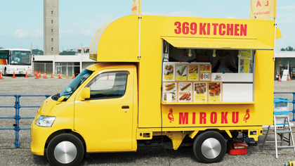
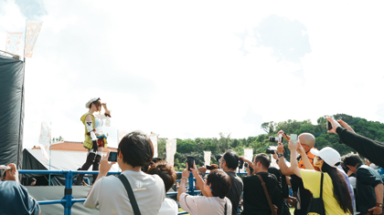
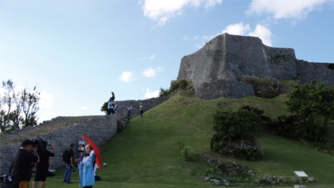

- ※最新情報は『うるハロ公式X(@uruhallow)』でご案内いたします。
- ※屋外で実施の企画は、当日の天候により内容の変更・中止が生じる場合がございます。
『うるハロ公式X』をフォローいただき、最新情報をご確認ください。

「あまわりパークイベント広場」
の企画
ニコニコ変身コーナー

コスプレ衣装を持っていない・・・
衣装を着てイベントを楽しんでみたい！
そんな方々のために、無料の衣装貸し出しを実施しています。
幅広いサイズがあるので、この機会にコスプレを楽しんでみてください♪
※ 衣装の貸し出しは一人、１セットまでです
※ 1回90分までの時間制限がございます
※ 衣装の破損は、場合によっては請求される場合がございます
開催日時2025年11月1日（土）、2日（日）11:00〜17:00
開催場所あまわりパーク施設側
更衣室・クローク
うるハロはコスプレ来場OK！
ですが、現地で着替えるコスプレイヤーの為に更衣室クロークも準備しています。
ルールを守って、お気軽にご利用ください！
※ 更衣室の利用は無料ですが、場所取りはご遠慮ください
※ 来場順でご案内しております、時間の予約は不可となっています
開催日時2025年11月1日（土）、2日（日）10:00〜16:30
開催場所あまわりパーク施設内
アニソンDJコーナー

DJ健兄によるアニソンDJブース！
沖縄県内で数々のサブカルイベントを開催、
普段は那覇のライブスペース「SOUNDS GOOD」を経営。
当日も会場を盛り上げるためテンション上げていきます♪
アニメ好き、サブカル好き集まれ〜
開催日時2025年11月1日（土）、2日（日）11:00〜16:00
開催場所あまわりパークイベント広場
自作コスプレアイテム体験コーナー

造形が得意なコスプレイヤーさんの自作アイテム展示。
触ったり、被ったり、写真も撮ることも可能です！
コスプレイヤーさんはもちろん、一般のお客様も体験し、お気に入りのアイテムと写真をたくさん撮ってくださいね。
憧れのキャラクターアイテムに出会えるかも？！
開催日時2025年11月1日（土）、2日（日）11:00〜16:00
開催場所あまわりパークイベント広場
フードトラック

楽しいいベントには、美味しいお食事も必要♪
たくさんお種類のご飯・デザートをラインナップしています。
のんびりできる、イートインスペースーもご利用可能、
レジャーシートをもって芝生の上でピクニック気分も味わえます♪
開催日時2025年11月1日（土）、2日（日）
11:00〜16:00
開催場所あまわりパークイベント広場
「勝連城跡（四の曲輪）」
の企画
スペシャルゲスト撮影会

今年のスペシャルゲスト「伊織もえ」さんによる撮影会を実施！
世界遺産勝連城跡をバックに、
憧れのコスプレイヤーさんの写真はうるハロだけ♪
スマートフォンでの撮影も可能なので、一般のかたもお気軽にご参加ください。
※ 撮影会は限定100名
※ 応募の中から抽選で決定いたします
開催日時2025年2日（日）
13:00〜14:00
開催場所勝連城跡（四の曲輪）
コスプレイヤー撮影会場

世界遺産勝連城跡を無料開放！
お気に入りのポイントを見つけて、撮影を楽しめます。
※ コスプレイヤーさんの無断撮影は禁止です
必ず声をかけて了承を得て行ってください
※ 立ち入り禁止区域での撮影はご遠慮ください
開催日時2025年11月1日（土）、2日（日）
11:00〜17:00
開催場所勝連城跡（四の曲輪）